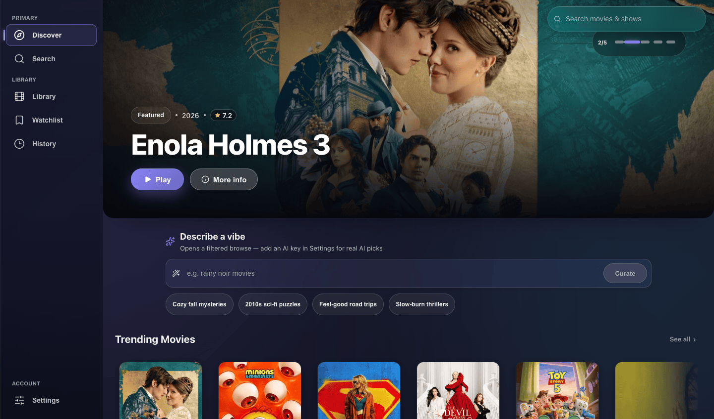

Trending rows, cinematic detail pages, and a release calendar - artwork and metadata that always look right.
Featured
Self-hosted
MIT · open source
Let’s get you streaming.
DebridStreamer turns your Real-Debrid, AllDebrid, Premiumize, or TorBox account into a private streaming service: browse with TMDB artwork, get AI picks, and play instantly-cached streams in a built-in player that handles anything - MKV, HEVC, 4K - with nothing else to install. On a server you run, with profiles for the whole house.
Latest desktop and PWA builds are available on GitHub Releases.

Self-hosted Your server, your debrid keys, your data
Instant Plays already-cached streams - no waiting
Profiles Separate libraries per person, optional passwords
Everywhere Desktop apps plus a mobile PWA
Features
Everything a streaming setup should have.
Discovery, recommendations, instant playback, and cross-device sync - in one app you run yourself, with no bill beyond the debrid account you already have.
Privacy first, by design. Full Local reaches only the essentials to find and play. Offline keeps everything on your device and plays what you already have. No update checks, no telemetry, ever.
Multiple people share one device, each with a separate library, history, and watchlist. Add an optional password to keep a profile private.
Describe a mood and get a curated lineup. Bring your own Anthropic, OpenAI, or local Ollama key.
Checks your debrid caches across four providers plus your sources, then plays what's already there - no waiting on downloads.
MKV, HEVC, 4K - playing right inside the window, with nothing to install. Premium controls, instant seeking, and subtitle styling. Prefer VLC or IINA? Point playback anywhere.
Browse seasons with stills and resume bars, mark episodes watched, and roll straight into the next one when the credits hit.
Pull subtitles from OpenSubtitles, tune their look, and translate them with your AI key - right in the player.
Import your list from IMDb or Letterboxd, see watch stats, and pick up exactly where you left off on any device.
Download
Pick your platform. It's instant.
Signed desktop builds with an in-app updater and a built-in player - nothing else to install - plus a PWA for everything with a browser.
Available downloads
Loading release metadata from GitHub Releases.
- macOS - Apple Silicon Instant · notarized
- macOS - Intel Instant · notarized
- Windows - installer Instant · signed updater
- Linux - AppImage, deb Instant · signed updater
- iPhone, iPad, Android Browser install
All release assets
Self-host
One private server for every screen.
Host it on an always-on desktop, NAS, VPS, Raspberry Pi, or home server. The server owns logins, profile isolation, encrypted credentials, stream sessions, and the provider-facing IP - your debrid keys never leave your network.
The desktop app can start the server straight from Settings, then hand phones and tablets a hosted PWA with a copyable setup URL and QR code.
On an Ubuntu server it's one command against the prebuilt,
multi-arch (amd64 + arm64) image. Prefer no Docker? There's a native
Node + systemd path and a .deb package too -
see the
Ubuntu server guide.
ubuntu - prebuilt image
mkdir debridstreamer && cd debridstreamer
curl -fsSLO https://raw.githubusercontent.com/Tgk-30/\
DebridStreamer/main/deploy/compose/docker-compose.ghcr.yml
curl -fsSL https://raw.githubusercontent.com/Tgk-30/\
DebridStreamer/main/deploy/compose/.env.example -o .env
docker compose -f docker-compose.ghcr.yml up -dFor the household
One server, a profile for everyone.
Invite the people you live with, keep their history separate, and give kids a safer corner of the catalog - all from the same self-hosted server.
Each profile gets its own watchlist, history, resume points, and optional debrid credential overrides on top of the shared account.
Mark a profile as a kid profile to cap maturity, hide anything above the rating, and require the parental lock to switch back out.
Anyone on a restricted profile can request a title; admins review requests alongside server health, sessions, and bandwidth.
Phones & tablets
Install your server as an app.
Open your server URL in Safari, tap Share, then Add to Home Screen.
Open your server URL in Chrome or Edge and choose Install app from the browser menu.
Use the downloadable desktop app, or just connect any browser to your own server URL.
Updates
Signed updates, installed in place.
The desktop app checks GitHub Releases for a signed
latest.json. When a new version ships, the in-app
updater can download, install, and relaunch into it - and
auto-checks can be turned off from Settings.
- Signed update manifest
- macOS notarized builds
- Windows and Linux installers
- Update on your schedule